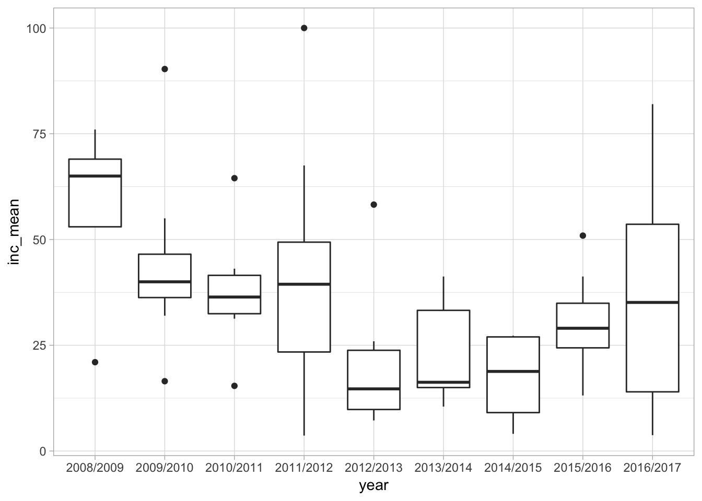
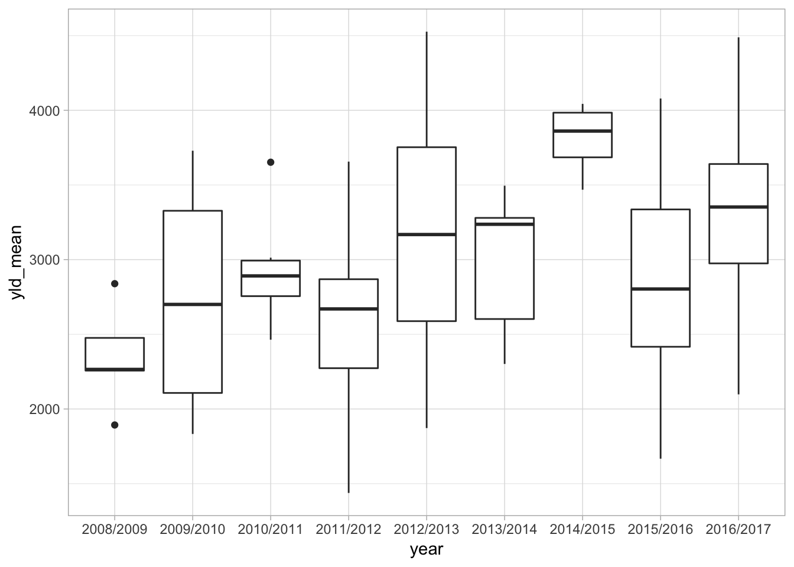
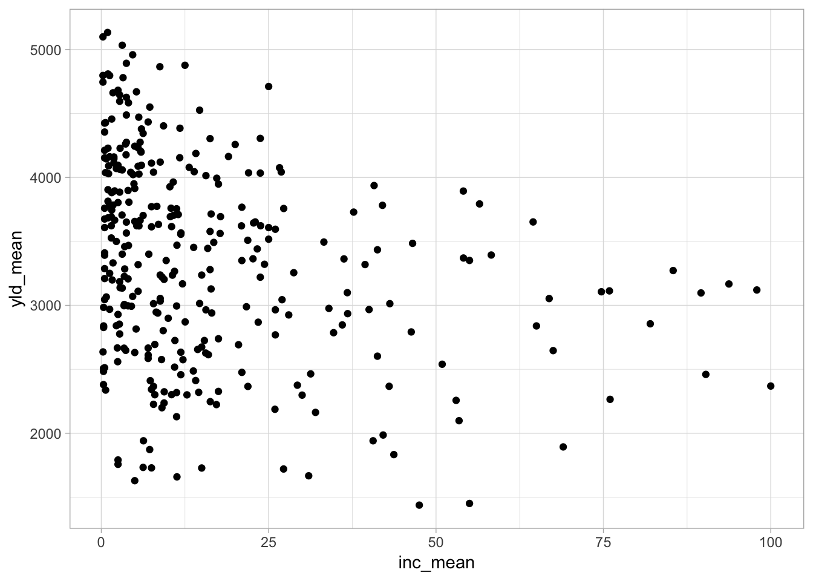
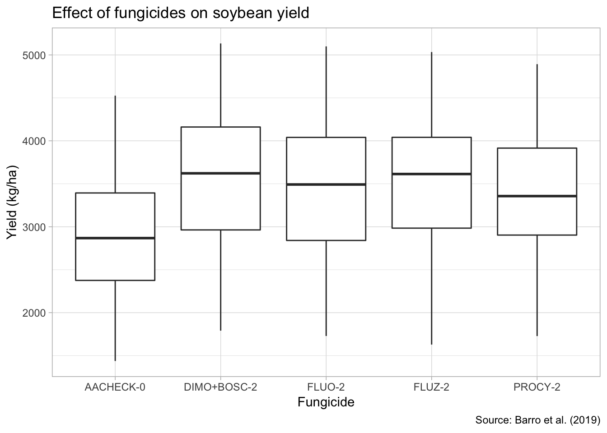

(What this script does?) Describes (in sufficient details for both self and third-party reproducibility!) the steps of the analysis of data obtained in field experiments conducted in Brazil to evaluate the effect of fungicides for managing soybean white mold.
The data were organized as binary file (.xlsx) and text file (.csv) and both are available with the same structure and content. R has functions for importing both data types. Let’s work with the binary format for now as this is the format that is saved directly from a spreadsheet software (Excel, LibreOffice, etc.). We will use the read_excel function of the readxl package.
library(readxl)
# Load the data and assign it to dat_wm dataframe.
dat_wm <- read_excel("data/dat-whitemold.xlsx")
# Check the first and last six rows
head(dat_wm)Apparently, we have the data succesfully imported. Let’s now use a combination of data visualization and wrangling to make some decisions on which data will be used and if there is any transformation required. We will use a set of functions of the dplyr package, but to facilitate our job (or the code style I like to use), let’s load the tidyverse that includes dplyr, ggplot2 and several other packages, and also Janitor for basic summary.
library(tidyverse)## Registered S3 methods overwritten by 'ggplot2':
## method from
## [.quosures rlang
## c.quosures rlang
## print.quosures rlang## ── Attaching packages ───────────────── tidyverse 1.2.1 ──## ✔ ggplot2 3.1.1 ✔ purrr 0.3.2
## ✔ tibble 2.1.3 ✔ dplyr 0.8.1
## ✔ tidyr 0.8.3 ✔ stringr 1.4.0
## ✔ readr 1.3.1 ✔ forcats 0.4.0## ── Conflicts ──────────────────── tidyverse_conflicts() ──
## ✖ dplyr::filter() masks stats::filter()
## ✖ dplyr::lag() masks stats::lag()library(janitor)##
## Attaching package: 'janitor'## The following objects are masked from 'package:stats':
##
## chisq.test, fisher.test# Check structure and type of variables automatically assigned
glimpse(dat_wm)## Observations: 404
## Variables: 14
## $ study <dbl> 1, 1, 1, 1, 1, 2, 2, 2, 2, 2, 3, 3, 3, 3, 3, 4, 4…
## $ year <chr> "2008/2009", "2008/2009", "2008/2009", "2008/2009…
## $ location <chr> "Montividiu", "Montividiu", "Montividiu", "Montiv…
## $ state <chr> "GO", "GO", "GO", "GO", "GO", "GO", "GO", "GO", "…
## $ site_altitude <dbl> 921, 921, 921, 921, 921, 1031, 1031, 1031, 1031, …
## $ region <chr> "North", "North", "North", "North", "North", "Nor…
## $ fungicide <chr> "AACHECK-0", "DIMO+BOSC-2", "FLUO-2", "FLUZ-2", "…
## $ inc_mean_check <dbl> 76, 76, 76, 76, 76, 53, 53, 53, 53, 53, 65, 65, 6…
## $ inc_mean <dbl> 76, 28, 27, 26, 40, 53, 7, 15, 8, 16, 65, 25, 23,…
## $ yld_mean_check <dbl> 2265, 2265, 2265, 2265, 2265, 2257, 2257, 2257, 2…
## $ yld_mean <dbl> 2265, 2925, 3044, 2965, 2967, 2257, 2666, 2674, 2…
## $ yld_mse <dbl> 34780.02, 34780.02, 34780.02, 34780.02, 34780.02,…
## $ yld_sd <dbl> 85.57, 203.47, 189.12, 285.09, 226.41, 62.99, 63.…
## $ design <dbl> 3, 3, 3, 3, 3, 3, 3, 3, 3, 3, 3, 3, 3, 3, 3, 3, 3…## Number of treatments by year
dat_wm %>%
tabyl(year)dat_wm %>%
group_by(year, study) %>%
summarise(n()) %>%
tabyl(year)dat_wm %>%
group_by(year, state) %>%
summarise(n()) %>%
tabyl(state)dat_wm %>%
tabyl(fungicide)Now that we explored the data, we may want to make some decisions such as selection of treatments based on criteria. For now, we decided to work with fungicides which were evaluated in more than 50 trials and applied only twice. Based on these, two fungicides will not be included in our analysis. Let’s do some filtering in the data and prepare it for further analysis. We will also export the new data as a new data file.
dat_wm2 <- dat_wm %>%
filter(fungicide!= "CARB+PROCY-2") %>%
filter(fungicide != "TIOF-4")Let’s check if the filter was applied correctly
dat_wm2 %>%
tabyl(fungicide)Now we can export the new data using the write_csv function.
write_csv(dat_wm2, "data-whitemold2.csv")Now let’s have a quick look at the data so we can learn from it before we go ahead with the meta-analysis.
theme_set(theme_light())
dat_wm2 %>%
filter(fungicide == "AACHECK-0") %>%
ggplot(aes(year, inc_mean))+
geom_boxplot()
dat_wm2 %>%
filter(fungicide == "AACHECK-0") %>%
ggplot(aes(year, yld_mean))+
geom_boxplot()
dat_wm2 %>%
#filter(fungicide == "AACHECK-0") %>%
ggplot(aes(inc_mean, yld_mean))+
geom_point()## Warning: Removed 2 rows containing missing values (geom_point).
dat_wm2 %>%
ggplot(aes(fungicide, yld_mean))+
geom_boxplot()+
labs(x = "Fungicide", y = "Yield (kg/ha)", title = "Effect of fungicides on soybean yield",
caption = "Source: Barro et al. (2019)")
ggsave("figs/yield_fungicide_box.png")## Saving 7 x 5 in image